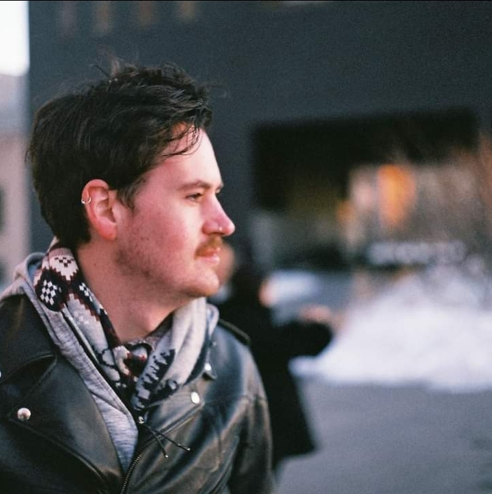

Who we are:
We are just a bunch of bartenders who love this city and want to share it with all travellers and newbies who have a passion for beer and an even greater passion for fun! We even love it so much we're willing to spend our days off showing people Galway's coolest spots, so don't be shy, book a tour today!
What we do
We are beer and whiskey afficionados who know just about all there is to know about three things: Beer, Whiskey and Galway city! If you want to learn more about Irish spirits, draughts and the amazing Irish craft beer scene then these tours are for you! New to the city? Let us help you get nestled in with our famous weekly social meet-ups!
Testimonials.
“I met my wife on the tour and we loved the city so much we moved here. I don't think we would have discovered all of Galway's hidden gems without the guys at Galway Beer and Whiskey Tours”
-Rob
“Really enjoyed the tour! The guys are so passionate and knowledgable. It's the only way to visit Galway!”
-Becky
“We met each other at the language exchange and became fast friends, we always practice our languages together and it gives us a great excuse to have a beer! Cannot recommend these guys enough!”
-Aoife and Noddy
“I moved to Galway for studying, I used the meetups to help me settle in. I made some life long friends and I always recommend the meet-ups to people I meet! Thanks again guys!.”
-Brian
Tours
If you want to learn more about Irish spirits, draughts and the amazing Irish craft beer scene then these tours are for you! We'll take you to some of Galway's best kept secrets, where you'll drink the finest Irish whiskey and sip some of the tasiest beer both side of the atlantic all the while soaking up the atmosphere of the Irish pub scene and we'll even throw in some local tales to satisfy the curiousity of all you history buffs out there!
Meet Ups
Making friends in a new city is tough but it doesn't need to be! Let us help you get settled in and show you the best spots and people this city has to offer. Our meet-ups are free but donations are welcome. Locations change every week so you can get to know the city and meet new people at a nice relaxed pace. What are you waiting for? Get in touch today!